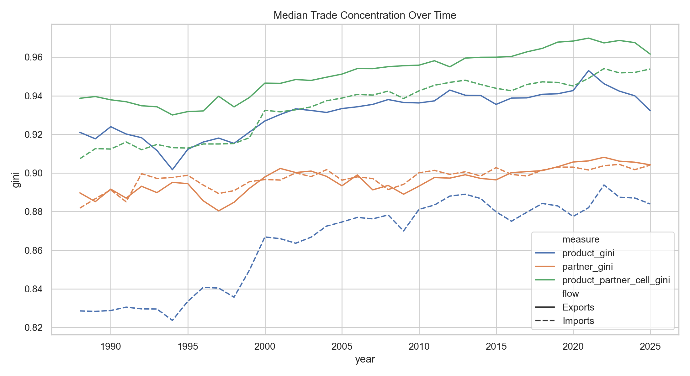
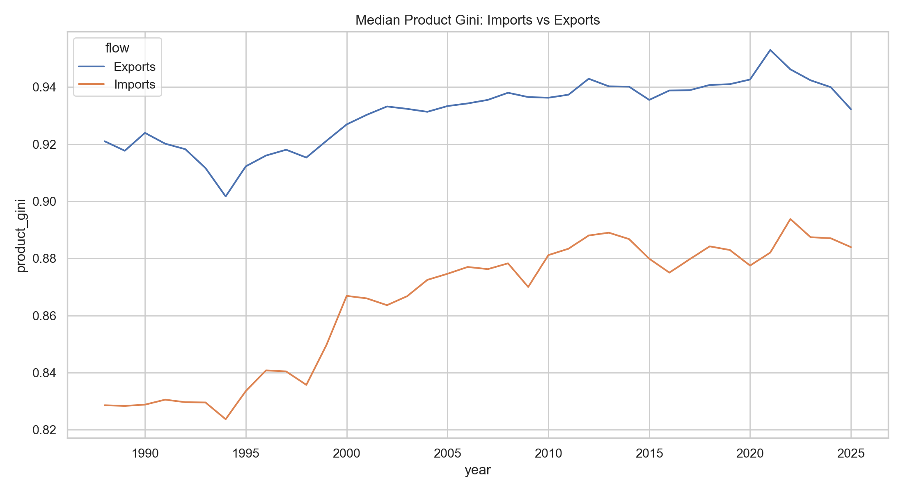
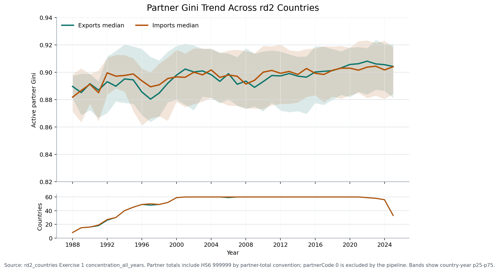
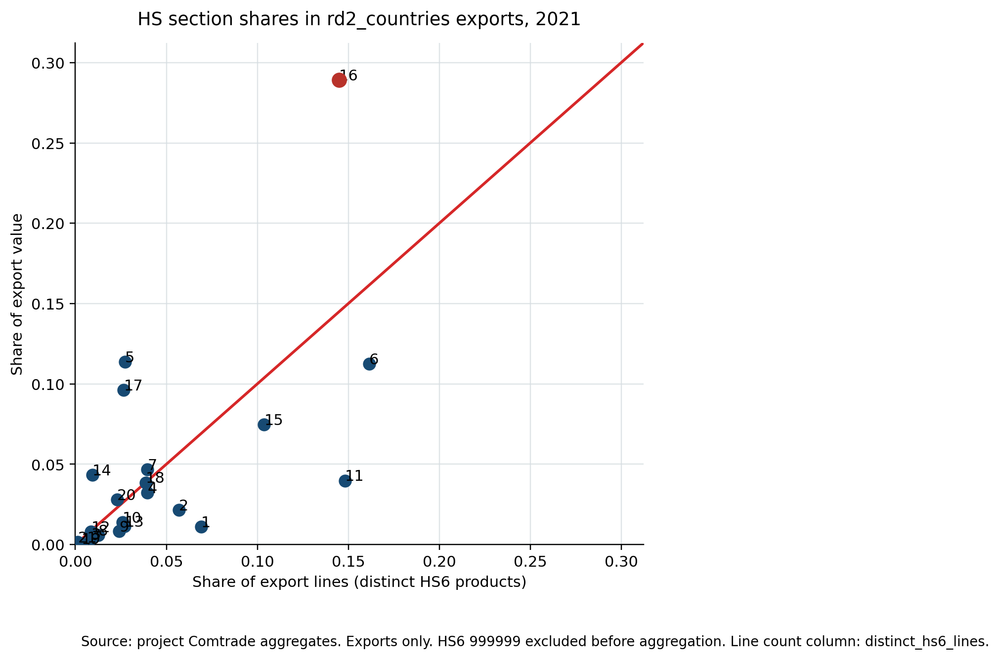
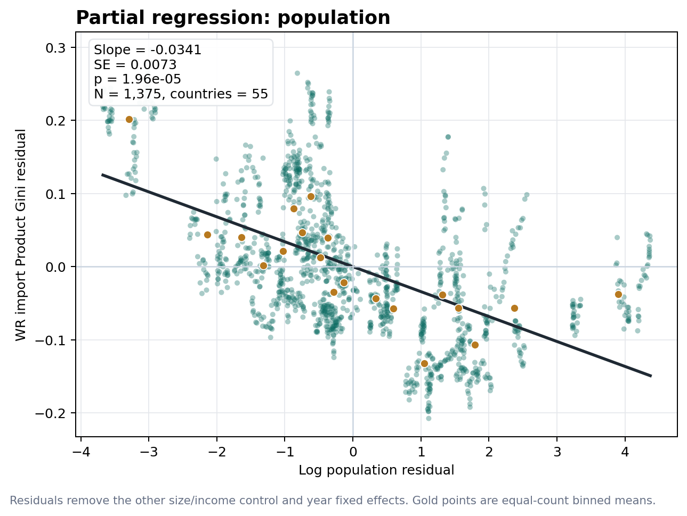
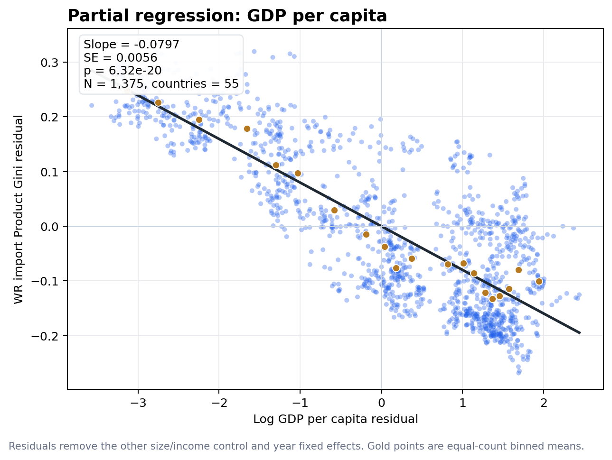

Project contribution map
What This Project Adds
The project contribution is four connected empirical moves: document persistence of concentration in both imports and exports; show that export-product concentration is systematically lower for larger countries, matching the Hummels-Klenow extensive-margin intuition that larger countries export more products; show that a simple intermediate-input story is not enough to explain import concentration; and construct a world-relative measure that benchmarks concentration against the actual world product basket rather than an equal-weighted product universe.
1. Persistence of Trade Concentration
Claim: concentration is not just a 2001 cross-section fact. In the 60-country 1988-2025 panel, median Product Ginis across HS6 products are 0.931 for exports and 0.871 for imports; export Product Gini moves from 0.921 in 1988 to 0.932 in 2025, while import Product Gini moves from 0.829 to 0.884.
Literature it speaks to: Panagariya-Bagaria's product concentration evidence, Imbs and Wacziarg's diversification path, Cadot, Carrere, and Strauss-Kahn's diversification/reconcentration work, and export-survival/extensive-margin evidence such as Besedes and Prusa.
What is interesting: the persistence result turns the project from a replication of a one-year fact into a panel fact. The import side also keeps concentration high, so the story is not only about export specialization.
{kind=link}

{kind=link}

Partner-Gini Stability, In Progress; Unconfirmed
Provisional claim: active Partner Gini appears high and slow-moving for most rd2 countries over 2000-2024. The median fitted absolute 10-year change is 0.007 for exports and 0.005 for imports; 85.0% of export country trends and 91.7% of import country trends fall within the +/-0.02 Gini-point-per-decade practical stability margin.
Why it matters: if partner concentration is stable while product concentration and extensive margins move, the project can separate persistent partner exposure from product-basket diversification. That would make Partner Gini a useful baseline control or contrast in later mechanism tests, not just another concentration outcome.
Status: this is descriptive and not yet a confirmed contribution. The check still needs independent review against endpoint sensitivity, reporting gaps, country exceptions, and the exact partner-total convention before it should be promoted into the headline claims.
{kind=link}


| Flow | Countries | Median |slope|/decade | P90 |slope|/decade | Stable slopes | Median endpoint change | Stable endpoints | Common trend/decade | Raw p | Obs. |
|---|---|---|---|---|---|---|---|---|---|
| Exports | 60 | 0.007 | 0.025 | 85.0% | 0.014 | 85.0% | 0.001 | 0.656 | 1,491 |
| Imports | 60 | 0.005 | 0.019 | 91.7% | 0.013 | 90.0% | 0.003 | 0.038 | 1,492 |
Source: rd2_countries partner-gini stability artifacts. Unit of observation is country-year-flow. Partner totals include HS6 999999 by partner-total convention; partnerCode 0 is excluded. The figures and table are marked in progress and unconfirmed pending adversarial review.
2. Larger Countries Have Less Concentrated Export Product Baskets
Claim: export-product concentration is systematically lower for larger countries in the country-size specification. The important visual is the yearly beta plot: it asks whether the cross-country slope on log population is repeatedly negative, not just whether one pooled regression happens to be significant.
Literature it speaks to: Hummels and Klenow show that larger economies export more varieties and higher-quality goods; related product-composition work includes Schott's specialization evidence and the broader extensive-margin literature.
What is interesting: a Gini result is the concentration-side counterpart of the Hummels-Klenow extensive-margin result. If larger countries export more products, their export product basket should look less lopsided across products; this page shows that negative size gradient directly.

3. The Simple Intermediate-Input Explanation Is Not Enough
Claim: intermediates matter by scale, but they do not fully explain import product concentration. The Exercise 11 product-level test weakens the broad processing story: concentration-driving imported intermediates are not generally more export-linked than other concentration-driving imports, while supplier-country exposure remains a narrower plausible mechanism.
Literature it speaks to: imported-input productivity and export-capability work, including Amiti and Konings, Goldberg, Khandelwal, Pavcnik, and Topalova, Halpern, Koren, and Szeidl, and Benguria's imported-intermediate-input export-diversification framing.
What is interesting: this is a mechanism discipline result. It says imported inputs can matter for production, but high import Product Gini is not automatically evidence of a beneficial intermediate-input channel. The remaining story is more specific: supplier exposure in certain input-heavy product groups.


4. World-Relative Benchmarking
Claim: the world-relative Product Gini asks whether results survive when concentration is benchmarked against the actual world product basket rather than an equal-weighted HS6 product universe. The export benchmark uses leave-one-out world_broad exports; the import counterpart uses leave-one-out world_broad imports.
Literature it speaks to: export-variety and product-composition work, especially Hummels-Klenow, Schott, and Hausmann, Hwang, and Rodrik's export-composition growth framing. It also speaks to measurement questions in diversification work because HS6 codes are not equal-sized economic slots.
What is interesting: a conventional active-product Gini treats a tiny world product and a huge world product as equal product slots. The world-relative measure makes the denominator economically meaningful: being absent from or over-weighted in large world products matters more than being unusual in tiny product categories.
{kind=link}

Why import weights need not equal export weights: world imports and world exports are theoretically two sides of the same transactions, but reported data differ by flow, valuation, timing, partner coverage, re-exports, mirror-reporting gaps, and CIF versus FOB conventions. For an import-side estimand, the benchmark is therefore the reported world import basket, not a silent reuse of export weights.
5. World-Relative Import Concentration Falls With Size and Income
Claim: in the import world-relative country-size specification, bigger and richer countries have lower world-relative import product concentration, conditional on the controls and year fixed effects in that specification.
What is interesting: this result is stronger than the standard import Product Gini size result. Standard import concentration is not meaningfully related to population in the same key table, but the world-relative import measure is: log population is significant and negative, and log GDP per capita is also significant and negative in the full model table.
Reporting note: the world-relative import rows use the balanced 55-country, 2000-2024 import panel, so the country-size rows have 1,375 observations. Raw p-values and BH q-values below 0.05 are highlighted separately. The GDP-per-capita q-values were recomputed because the key-coefficient artifact did not include that control; the table states the q-value source for each row.
How the coefficient is visualized: these are Frisch-Waugh-Lovell partial-regression plots for the year-FE, country-clustered model. Each plot residualizes World-Relative Import Product Gini and the focal regressor against the other size/income control plus year fixed effects. The fitted line slope is therefore the regression coefficient in the table below.
{kind=link}

{kind=link}

| Term | Inference | Coef. | SE | Raw p | BH q | Obs. | Clusters | q-value source |
|---|---|---|---|---|---|---|---|---|
| Log population | Year FE, country clustered | -0.0341 | 0.0073 | 1.96e-05 | 0.0000784 | 1,375 | 55 | Key-table BH q |
| Log population | Year FE, two-way clustered | -0.0341 | 0.0071 | 7.40e-05 | 0.000148 | 1,375 | 25 | Key-table BH q |
| Log GDP per capita | Year FE, country clustered | -0.0797 | 0.0056 | 6.32e-20 | 0.000000000000000000506 | 1,375 | 55 | BH q recomputed after adding GDP pc to the country-size import family |
| Log GDP per capita | Year FE, two-way clustered | -0.0797 | 0.0055 | 2.71e-13 | 0.00000000000108 | 1,375 | 25 | BH q recomputed after adding GDP pc to the country-size import family |